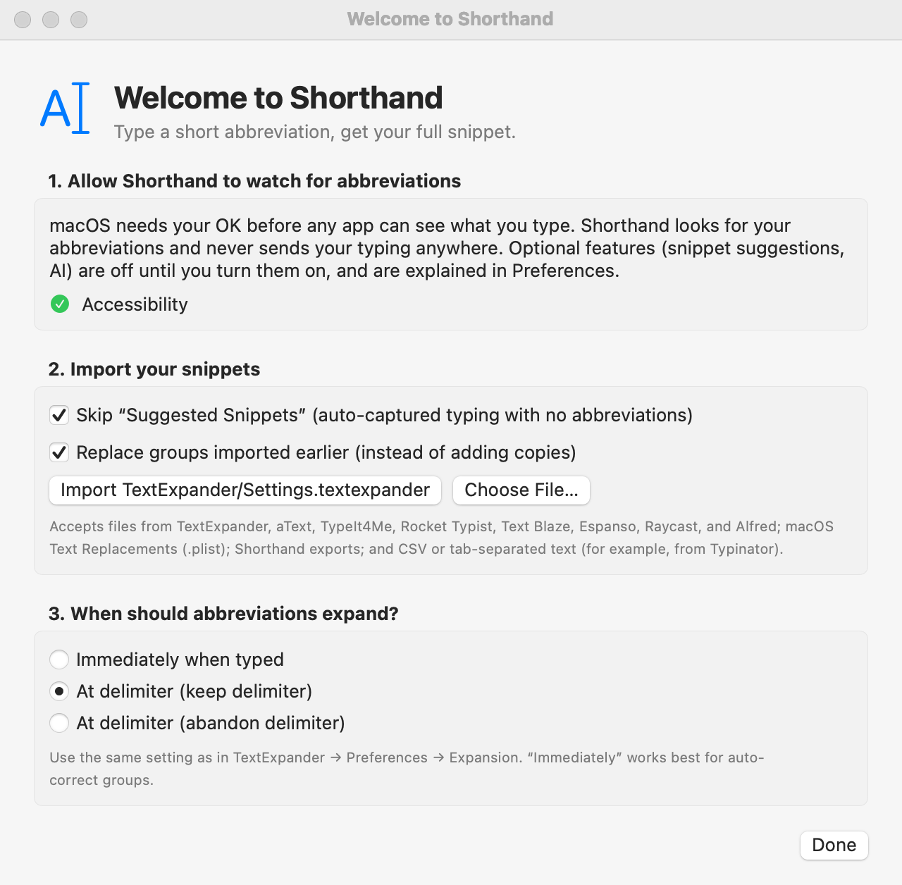

Importing Snippets
Bring your snippets from TextExpander, aText, TypeIt4Me, Rocket Typist, Text Blaze, Espanso, Raycast, Alfred, macOS Text Replacements, or any app that exports a spreadsheet. TextExpander snippets come across unchanged, and their codes keep working.
To import your snippets
- Choose File ▸ Import Snippets… (⇧⌘I). This opens the setup window; the import is one of its steps. You can also click + below the group list and choose Import Snippets….
- If Shorthand finds your library, it shows a button for it, such as Import TextExpander/Settings.textexpander. Click it.
- Otherwise click Choose File… and pick your file or backup folder.
- A green line reports what was imported, e.g. Imported 1042 snippets in 9 groups (9 new, 0 replaced).
- Quit TextExpander (or turn off its expansion) so abbreviations don’t expand twice.
Where Shorthand looks automatically
~/Dropbox/TextExpander/Settings.textexpander~/Library/Application Support/TextExpander/Settings.textexpanderTextExpander/Settings.textexpanderin iCloud Drive
What you can import
| File | What it is |
|---|---|
Settings.textexpander | Your whole library: every group and snippet. |
A group .textexpander file | One exported group. |
A .textexpanderbackup folder | An automatic backup; each group inside is imported. |
A .txt, .csv, or .tsv file | One snippet per line: abbreviation, content, and optionally a label, separated by a Tab (preferred) or a comma. The file becomes one group named after the file. |
Example text file:
;addr 12 High Street, Springfield Home address
;ph +1 555 0100 PhoneImport options
- Skip “Suggested Snippets” (auto-captured typing with no abbreviations)
- On by default. That group can hold thousands of phrases captured from your typing, possibly including private text, so it’s left behind unless you turn this off.
- Replace groups imported earlier (instead of adding copies)
- On by default. Importing the same library again updates the groups you imported before. Turn it off to add copies, named “… (imported)”.
What comes across
- Abbreviations, labels, content, and use counts.
- Plain-text, formatted-text, and script snippets (AppleScript, shell, JavaScript).
- Each snippet’s case setting (Case Sensitive, Ignore Case, Adapt to Case of Abbreviation).
- Each group’s Expand after rule, app rules, and whether it’s included in search.
- Your lifetime “characters saved” total, shown in Window ▸ Statistics under Including your TextExpander history.
The example group My Snippets is removed on import if you haven’t changed it.
Importing copies your snippets; it never changes the original file. To take snippets the other way, see Exporting Your Snippets.
From other apps
Use Choose File… in the same window and pick the file (or folder) the other app exports. Each import becomes a new group.

| App | What to choose | What Shorthand converts |
|---|---|---|
| Espanso | A match file (.yml), or the whole match folder (one group per file). Run espanso path in Terminal to find it. | $|$ (cursor), clipboard variables, date variables (with offsets) and forms become Shorthand codes. |
| Raycast | The .json file from Raycast’s snippet export. | {clipboard}, {cursor}, {date}, {time}, {datetime}, {day} and {argument} (as fill-ins, with options as pop-up menus). |
| Alfred | A .alfredsnippets file (export a snippet collection in Alfred’s preferences). | {clipboard}, {cursor}, dates and times. The collection’s keyword prefix and suffix are added to each abbreviation. |
| macOS Text Replacements | In System Settings ▸ Keyboard ▸ Text Replacements, select them all and drag them to the desktop. Choose the Text Substitutions.plist file that appears. | Everything (they’re plain text). |
| aText | In aText, choose File ▸ Save… to save an .atext file (or use one of its automatic backups). aText’s JSON export works too. | Groups, abbreviations, labels, and text. aText’s own variables stay as text; script and picture snippets are left out. aText 3 files are read from a reverse-engineered description, so check the result. |
| TypeIt4Me | In TypeIt4Me, hover over a set in the sidebar, click its action button, and choose Reveal in Finder. Choose that .typeit4me file. | Dates (including date math), the clipboard (⌘), Tab, Return, and Delete keys, the cursor, and AppleScript snippets. Formatted text comes across as plain text. |
| Rocket Typist | Export a folder (.rtfolder) or a snippet (.rockettypist) from Rocket Typist. | Dates (with date math), text fields, option menus, the cursor, the clipboard, nested snippets, keys, and JavaScript snippets. |
| Text Blaze | In the Text Blaze dashboard, open Import/Export and click Export on a folder, or Export all folders. Choose the .json file. | Folders, shortcuts, labels, the clipboard, the cursor, dates (with shifts), form fields, menus, toggles, imported snippets, and keys. Formulas, conditions, and site commands stay as text. |
| Typinator | In Typinator, export a set as tab-separated text or CSV, then choose that file. | Dates (with date math), the clipboard, the cursor, Tab and Return, simple input fields, and other abbreviations. Functions, pop-up menus, variables, and scripts stay as text. |
| PhraseExpress | PhraseExpress doesn’t export its library in a format other apps can read. Copy your phrases over by hand, or export them one at a time as text. | Not available. |
| Any other app | Export as CSV or tab-separated text (see that app’s help), then choose the file. | The text comes across as is. |
| Shorthand | A .json file from File ▸ Export Snippets… | Everything, including tags, types, and app rules. |
- Spreadsheets can have a header row: Shorthand finds columns named like abbreviation, shortcut, keyword, or trigger, content, snippet, text, or phrase, and label or name. Without a header, the columns are abbreviation, content, label. Quoted fields can span several lines.
- A
%sign in snippets from other apps is kept as a percent sign (Shorthand writes it as%%). Spreadsheets are the exception: their text is used as is, so TextExpander-style codes such as%clipboardin a spreadsheet keep working. Typinator spreadsheets follow the first rule. - Codes with no Shorthand equivalent (for example Espanso shell variables or Raycast’s
{uuid}) stay as text. Shorthand tells you how many, so you can find and fix them (search your snippets for the code’s name).
Converting leftover codes with AI
When an import keeps some of the other app’s codes as text, and you’ve set up AI, the import window shows ✨ Review Kept Codes with AI…. AI suggests the Shorthand version of each snippet; you tick the ones to use and click Apply Checked (⌘Z in the main window undoes it).
- Shorthand checks every suggestion. One that changes anything besides the codes, adds a script or
%ai, or names a snippet you don’t have is ignored. - Each snippet’s text is sent to your AI provider, one at a time. A large cloud model does this best.
If the import fails
- “… isn’t a snippet file Shorthand can import.” Pick
Settings.textexpander, a group file or backup folder, or one of the formats in From other apps. - “Couldn’t read …” The file may still be downloading from Dropbox or iCloud. Wait and try again.
- A message about missing snippet(s) in group means the library listed snippets it didn’t contain; the rest imported fine.